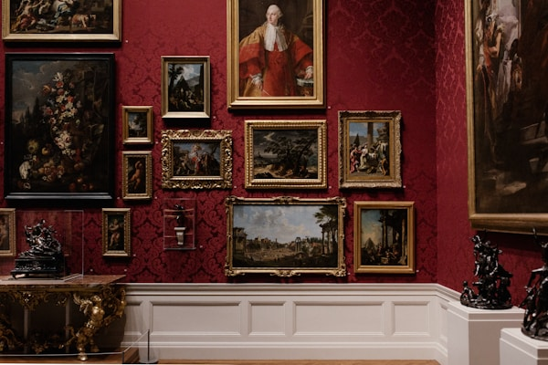

Explore

Our Mission
MonoMuse is committed to making art and technology accessible to everyone. Our mission is to inspire curiosity and creativity by showcasing the transformative power of digital innovation in the world of art and culture. We believe that the intersection of art and technology holds the key to understanding our rapidly evolving world.
Who We Serve
MonoMuse welcomes visitors of all ages and backgrounds. We serve:
- Art enthusiasts and collectors seeking contemporary digital works
- Students and educators exploring the relationship between art and technology
- Families looking for interactive and immersive cultural experiences
- Researchers and professionals in creative technology fields
- Community members interested in free public programming and events
Founded
MonoMuse was founded in 2015 in Pittsburgh, Pennsylvania, with a vision to bridge the gap between traditional art institutions and the digital age. What began as a small gallery space has grown into one of the region's most innovative cultural destinations.
Milestones
- 2015 — MonoMuse opens its doors with its inaugural exhibition, "Digital Horizons"
- 2017 — Welcomed its 100,000th visitor and expanded gallery space by 40%
- 2019 — Launched the annual "Art & Code" festival in partnership with Carnegie Mellon University
- 2021 — Introduced virtual tours and online exhibitions during the global pandemic
- 2023 — Opened the Interactive Innovation Lab for hands-on visitor experiences
- 2025 — Celebrated 10 years with a record-breaking attendance of over 500,000 annual visitors